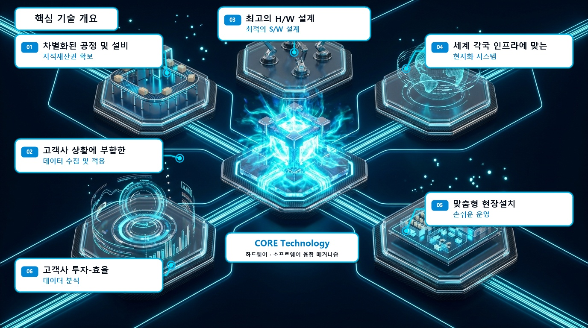

1. 4분할 독립 제어 메커니즘
하나의 모듈 내 4개 사분면 휠 유닛이 각각 독립적으로 승강 및 조향 각도를 제어하여, 비정형 화물이나 편심 하중 박스도 회전 없이 정확하게 분기합니다.
주식회사 에이티에이기술(ATA TECH)이 독자 개발한 4분할 독립 구동 팝업 휠 방향전환장치는 기존 일체형 휠 소터의 화물 자세 틀어짐과 충격 문제를 극복한 차세대 물류 자동화 설비입니다. 4개 구역의 휠 모듈을 독립 제어하여 시간당 4,500개 이상의 고속 연속 분기와 정밀 자세 보정을 동시에 구현합니다.

고속 택배 허브 터미널, 이커머스 풀필먼트 센터, 제조·유통 인라인 컨베이어 라인에 최적화된 정밀 분기 기술입니다.
하나의 모듈 내 4개 사분면 휠 유닛이 각각 독립적으로 승강 및 조향 각도를 제어하여, 비정형 화물이나 편심 하중 박스도 회전 없이 정확하게 분기합니다.
고응답 서보·구동부 설계를 통해 화물 간격을 최소화하면서도 시간당 4,500개 이상의 연속 분기를 안정적으로 수행합니다.
65dB 이하의 저소음 운전 환경을 제공하며, 카트리지형 모듈 구조로 기존 컨베이어 라인에 중단 시간을 최소화해 신속하게 설치·교체할 수 있습니다.

| 구분 (Parameter) | 상세 사양 (Specification) |
|---|---|
| 제품명 (Product Name) | 4분할 독립 구동 팝업 휠 방향전환장치 (4-Split Independent Pop-up Wheel Diverter) |
| 처리 속도 (Throughput / BPH) | 시간당 최대 4,500개 이상 (4,500+ Boxes Per Hour, 화물 규격에 따라 가변) |
| 적용 화물 규격 (Parcel Size) | 최소 150 × 150 mm ~ 최대 800 × 600 mm (박스, 파우치, 이형 화물 대응) |
| 허용 화물 중량 (Max Load) | 개당 최대 35 kg ~ 50 kg (고하중 강화형 옵션 지원) |
| 구동 및 제어 방식 (Drive System) | 4분할 독립 구동 정밀 서보/스테핑 모터 및 실시간 PLC/WCS 연동 제어 |
| 분기 각도 (Diverting Angle) | 좌·우 30°, 45°, 90° 및 360° 전방향 가변 각도 분기 지원 |
| 운전 소음 (Noise Level) | 65 dB 이하 저소음 설계 |
| 특허 및 지식재산권 (Patents) | 대한민국 특허 제10-2782386호 / 특허 제10-2956028호 (주식회사 에이티에이기술) |